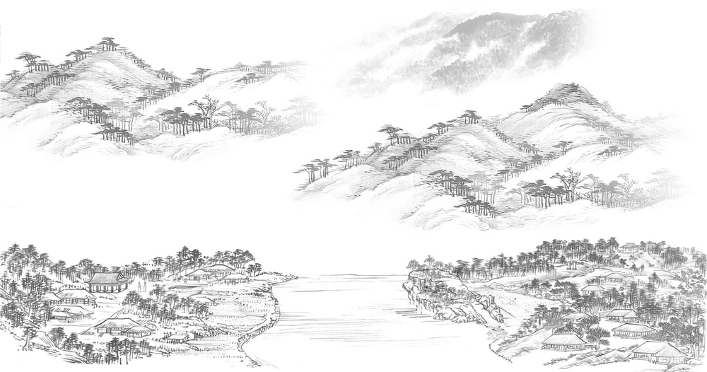

The Life of Yi Ha-gon

Origins and Early Life (1677–1707)
Born in Yangchon, Chopyeong-myeon, Jincheon-gun, Chungcheongbuk-do Province, Yi Ha-gon cultivated his scholarship and artistic talents from an early age. His early poems in Dutacho celebrated nature and the landscapes of his hometown.
A Turning Point (1708)
After passing the civil service examination and earning the title of jinsa (literary licentiate), Yi Ha-gon chose to withdraw from public life rather than pursue an official career and devoted himself to scholarship and the arts.
Seclusion and Scholarship (From 1709)
In Jincheon, Yi Ha-gon built Mangwollu, a pavilion that housed 10,000 books. There, he immersed himself in reading and scholarship while pursuing calligraphy and painting.
Travels and Excursions (1710s)
Yi Ha-gon traveled extensively across Korea, including to Geumgangsan Mountain and the Honam region. During his journeys, he visited Buddhist temples and captured his impressions of nature in poetry and painting.
Death and Legacy (1724)
Yi Ha-gon died in 1724, the year King Yeongjo ascended the throne. He left behind Dutacho, along with a substantial body of poetry, prose, calligraphy, paintings, and commentary. He is remembered as a quintessential literatus of the late Joseon dynasty who left a lasting mark on the history of Korean literature and art.